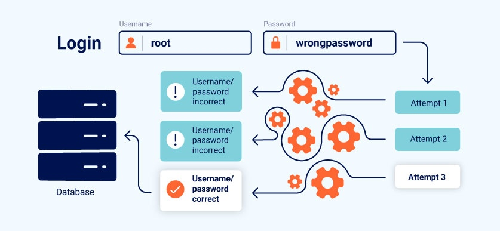

Business logic vulnerabilities
In this section, we'll introduce the concept of business logic vulnerabilities and explain how they can arise due to flawed assumptions about user behavior. We'll discuss the potential impact of logic flaws and teach you how they can be exploited. You can also practice what you've learned using our interactive labs, which are based on real bugs that we've encountered in the wild. Finally, we'll provide some general best practices to help you prevent these kinds of logic flaws arising in your own applications.

Labs
If you're already familiar with the basic concepts behind business logic vulnerabilities and just want to practice exploiting them on some realistic, deliberately vulnerable targets, you can access all of the labs in this topic from the link below.
What are business logic vulnerabilities?
Business logic vulnerabilities are flaws in the design and implementation of an application that allow an attacker to elicit unintended behavior. This potentially enables attackers to manipulate legitimate functionality to achieve a malicious goal. These flaws are generally the result of failing to anticipate unusual application states that may occur and, consequently, failing to handle them safely.
Note
In this context, the term "business logic" simply refers to the set of rules that define how the application operates. As these rules aren't always directly related to a business, the associated vulnerabilities are also known as "application logic vulnerabilities" or simply "logic flaws".
Logic flaws are often invisible to people who aren't explicitly looking for them as they typically won't be exposed by normal use of the application. However, an attacker may be able to exploit behavioral quirks by interacting with the application in ways that developers never intended.
One of the main purposes of business logic is to enforce the rules and constraints that were defined when designing the application or functionality. Broadly speaking, the business rules dictate how the application should react when a given scenario occurs. This includes preventing users from doing things that will have a negative impact on the business or that simply don't make sense.
Flaws in the logic can allow attackers to circumvent these rules. For example, they might be able to complete a transaction without going through the intended purchase workflow. In other cases, broken or non-existent validation of user-supplied data might allow users to make arbitrary changes to transaction-critical values or submit nonsensical input. By passing unexpected values into server-side logic, an attacker can potentially induce the application to do something that it isn't supposed to.
Logic-based vulnerabilities can be extremely diverse and are often unique to the application and its specific functionality. Identifying them often requires a certain amount of human knowledge, such as an understanding of the business domain or what goals an attacker might have in a given context. This makes them difficult to detect using automated vulnerability scanners. As a result, logic flaws are a great target for bug bounty hunters and manual testers in general.
How do business logic vulnerabilities arise?
Business logic vulnerabilities often arise because the design and development teams make flawed assumptions about how users will interact with the application. These bad assumptions can lead to inadequate validation of user input. For example, if the developers assume that users will pass data exclusively via a web browser, the application may rely entirely on weak client-side controls to validate input. These are easily bypassed by an attacker using an intercepting proxy.
Ultimately, this means that when an attacker deviates from the expected user behavior, the application fails to take appropriate steps to prevent this and, subsequently, fails to handle the situation safely.
Logic flaws are particularly common in overly complicated systems that even the development team themselves do not fully understand. To avoid logic flaws, developers need to understand the application as a whole. This includes being aware of how different functions can be combined in unexpected ways. Developers working on large code bases may not have an intimate understanding of how all areas of the application work. Someone working on one component could make flawed assumptions about how another component works and, as a result, inadvertently introduce serious logic flaws. If the developers do not explicitly document any assumptions that are being made, it is easy for these kinds of vulnerabilities to creep into an application.
What is the impact of business logic vulnerabilities?
The impact of business logic vulnerabilities can, at times, be fairly trivial. It is a broad category and the impact is highly variable. However, any unintended behavior can potentially lead to high-severity attacks if an attacker is able to manipulate the application in the right way. For this reason, quirky logic should ideally be fixed even if you can't work out how to exploit it yourself. There is always a risk that someone else will be able to.
Fundamentally, the impact of any logic flaw depends on what functionality it is related to. If the flaw is in the authentication mechanism, for example, this could have a serious impact on your overall security. Attackers could potentially exploit this for privilege escalation, or to bypass authentication entirely, gaining access to sensitive data and functionality. This also exposes an increased attack surface for other exploits.
Flawed logic in financial transactions can obviously lead to massive losses for the business through stolen funds, fraud, and so on.
You should also note that even though logic flaws may not allow an attacker to benefit directly, they could still allow a malicious party to damage the business in some way.
What are some examples of business logic vulnerabilities?
The best way to understand business logic vulnerabilities is to look at real-world cases and learn from the mistakes that were made. We've provided concrete examples of a variety of common logic flaws, as well as some deliberately vulnerable websites so that you can practice exploiting these vulnerabilities yourself.
How to prevent business logic vulnerabilities
In short, the keys to preventing business logic vulnerabilities are to:
- Make sure developers and testers understand the domain that the application serves
- Avoid making implicit assumptions about user behavior or the behavior of other parts of the application
You should identify what assumptions you have made about the server-side state and implement the necessary logic to verify that these assumptions are met. This includes making sure that the value of any input is sensible before proceeding.
It is also important to make sure that both developers and testers are able to fully understand these assumptions and how the application is supposed to react in different scenarios. This can help the team to spot logic flaws as early as possible. To facilitate this, the development team should adhere to the following best practices wherever possible:
- Maintain clear design documents and data flows for all transactions and workflows, noting any assumptions that are made at each stage.
- Write code as clearly as possible. If it's difficult to understand what is supposed to happen, it will be difficult to spot any logic flaws. Ideally, well-written code shouldn't need documentation to understand it. In unavoidably complex cases, producing clear documentation is crucial to ensure that other developers and testers know what assumptions are being made and exactly what the expected behavior is.
- Note any references to other code that uses each component. Think about any side-effects of these dependencies if a malicious party were to manipulate them in an unusual way.
Due to the relatively unique nature of many logic flaws, it is easy to brush them off as a one-time mistake due to human error and move on. However, as we've demonstrated, these flaws are often the result of bad practices in the initial phases of building the application. Analyzing why a logic flaw existed in the first place, and how it was missed by the team, can help you to spot weaknesses in your processes. By making minor adjustments, you can increase the likelihood that similar flaws will be cut off at the source or caught earlier in the development process.